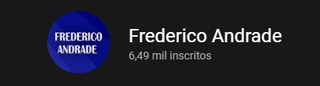

Olá!
Sobre o site:
O HowToSFS é um site que tem o foco em melhorar e facilitar a jogatina de pessoas que jogam um jogo chamado Spaceflight Simulator.
Sobre o criador:
Meu nome é Frederico Andrade, sou brasileiro e estudante. A ideia de ajudar as outras pessoas de alguma maneira, em jogos, por exemplo, era algo que eu já estava a muito tempo visando. Criei um canal no YouTube chamado Frederico Andrade, tendo como principal tema o jogo Spaceflight Simulator, lá eu ensino uma grande variedade de coisas sobre o jogo e também de um determinado ponto de vista, do espaço como um todo, algo que gosto muito.
Em minha visão, mesmo que com poucos espectadores relativos, a ideia deu certo, e como Spaceflight Simulator é um jogo que gosto muito, resolvi expandir a ideia criando um site.